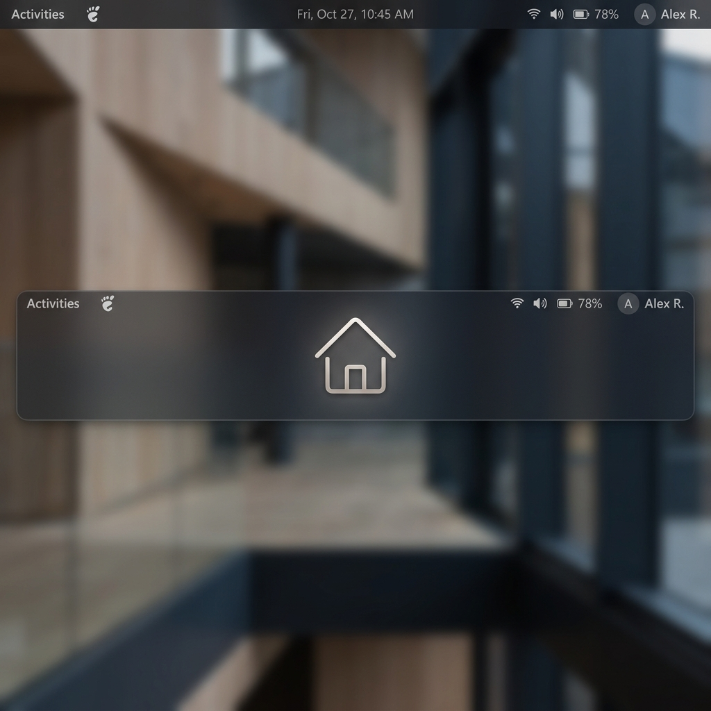

Home Button no es simplemente un acceso directo al escritorio; es una solución de gestión de estados de ventana diseñada para optimizar el flujo de trabajo en GNOME Shell. Al implementar una lógica de restauración inteligente, la extensión permite una transición fluida entre el modo de enfoque y la visibilidad total del escritorio.
La extensión opera como un módulo inyectado en el proceso principal de GNOME Shell, utilizando el sistema de clases introducido en GNOME 45.
La implementación se divide en tres pilares fundamentales:
NORMAL, manejo de workspaces y minimización.import { Extension } from 'resource:///org/gnome/shell/extensions/extension.js' permite una encapsulación limpia y acceso seguro a los recursos del sistema.
El núcleo de Home Button es su capacidad para capturar y restaurar el estado del escritorio de forma no destructiva.
Para evitar minimizar ventanas de sistema o paneles flotantes, se aplica un filtro riguroso:
this._minimizedWindows = windowsToFilter.filter(w =>
w && w.get_compositor_private() &&
w.can_minimize() &&
!w.minimized &&
!w.is_skip_taskbar() &&
w.get_window_type() === Meta.WindowType.NORMAL &&
!(excludeOnTop && w.is_above())
);Al restaurar, la extensión no solo des-minimiza; utiliza un sistema de Smart Focus que analiza los userTime de cada ventana para identificar cuál debe recibir el foco de entrada.
_windowStates).user_time."La gestión de ventanas en entornos modernos requiere más que simples llamadas a API; requiere entender la intención del usuario." — Principio de Diseño, Home Button Documentation
La extensión se integra profundamente con el ecosistema de GNOME mediante GSettings y herramientas de desarrollo estándar.
Utilizamos gschema.xml para definir tipos de datos estrictos (integers, doubles, enums), lo que garantiza la integridad de las preferencias del usuario.
| Ajuste | Tipo | Por defecto | Descripción |
|---|---|---|---|
icon-size | Double | 24.0 | Tamaño del glifo en px. |
animation-delay | Int | 0 | Retraso entre ventanas (ms). |
button-position | String | "left" | Ubicación en el panel. |
Home Button utiliza animaciones de opacidad y escala para proporcionar feedback inmediato al usuario.
this._icon.ease({
opacity: 0,
duration: ANIMATION_DURATION / 2,
mode: Clutter.AnimationMode.EASE_OUT_CUBIC,
onComplete: () => {
this._icon.set_gicon(newIcon);
this._icon.ease({ opacity: 255, ... });
}
});Mutter (Meta) — El gestor de ventanas y compositor de GNOME Shell.
GJS — El motor de JavaScript de GNOME basado en SpiderMonkey.
St (Shell Toolkit) — El conjunto de widgets optimizado para el panel y menús de la Shell.